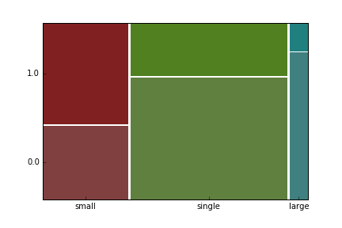

I am a theoretical physicist. Mathematics has been my main tool to unravel the secrets of Nature since 2005 when I started my PhD in Germany at Augsburg University. In 2010 I moved to New Zealand to work as a postdoctoral researcher at Massey University. In 2013 I won the Fast Start Marsden fund worth of NZ$ 300.000 to work on the project "Understanding quantum thermodynamics with the smallest heat engine". This fund allowed me to pursue my research independently till these days. It is one of the most prestigeous funding for young scientists in New Zealand.
During my career I have published more than 20 papers in reputable physics journals
(including 4 in Physical Review Letters, the world's premier physics letter journal). I have developed solid
analytical, problem solving and
numerical skills
by using various methods of condensed matter field theory, quantum statistical physics as well as numerical analysis in my research.
In the past several years, I have been amazed to see how quickly things are changing outside
academic life. The rise of Big Data and development of Machine Learning techniques caught my attention. The book
"Data Science from Scratch with Python" by Joel Grus inspired me to become a data scientist.
The Coursera course "Machine learning" by Andrew Ng reinforced my inspiration. According to DJ Patil, chief scientist at Linkedin, the best data scientists tend to be "hard scientists", particularly physicists. I am a physicist and my enthusiasm and passion in data-centered research now grow every day.
Unlike the novelists telling their stories in words, numbers from numerical studies are my elements in visualizing research output.
I believe in data analysis and machine learning models. They produce useful predictions for our life from the data that has been collected. Intensive human effort is needed to make those data to tell a story and in most cases it is challenging. But that is where it is intriguing. I am dedicated to hunt for the treasures in the data that can make a difference.
To showcase my skills I present several projects in my porfolio. I am an open-minded person, so feel free to contact me.
Portfolio
Titanic: Machine Learning from Disaster
This challenge is posted on
Kaggle, the home for data scientists. In this challenge, Kaggle asks to
complete the analysis of what sorts of people were likely to survive during Titanic sinking with the tools of machine learning.
Here I present a short summary of my attempt to address this challenge. Detailed analysis of data and implementation of a machine learning algorithm are provided in
my Github repository.
The training data set consists of 891 raws and 11 columns with the following description:
Column name
Description
Survival
Survival (0 = No; 1 = Yes)
Pclass
Passenger Class (1 = 1st; 2 = 2nd; 3 = 3rd)
Name
Name
Sex
Sex
Age
Age
Sibsp
Number of Siblings/Spouses Aboard
Parch
Number of Parents/Children Aboard
Ticket
Ticket Number
Fare
Passenger Fare
Cabin
Cabin
Embarket
Port of Embarkation (C = Cherbourg; Q = Queenstown; S = Southampton)
Features Engineering
Some variables are more predictive than others. For example, the following plot shows that
"Pclass" variable is highly predictive. The plot below demonstrates that passengers traveled in the third class were much more
unlikely to survive than passengers in higher classes. Hover the mouse over the bars to see their values.
We now engineer our first feature, the Title. The first name in the dataset reads
"Braud, Mr. Owen Harris". So the title of this name is "Mr.". In this way we can extract titles corresponding to each name.
They are "Mr.", "Mrs.", "Miss." and "Master.". The three plots below demonstrate predictive power of the new variable. It
appears that ladies (i.e. "Miss." or "Mrs.") and kids (i.e. "Master.") were
more likely to survive being in the first or second Pclass than in the third Pclass. On the other hand, "Mr." is highly unlucky
feature in all Pclasses.
Family size is our next derived feature. We derive it from "Sibsp" and "Parch" variables by simply adding them.
We can further bin the resulting numerical family sizes into three categories: "single", "small" and "large".
The mosaic plot below shows nicely that there were not many large families and, most importantly for us,
there is a survival penalty for traveling with a large family or single.

Machine learning
For this challenge Kaggle asks to use the Random Forest classification method to predict who survived and who did not.
Random Forest uses many decision trees and average them to produce a result. One of the trees is shown below.
For example according to this tree we can make the following prediction: If a passenger is not "Mr." traveling in the
1st or 2nd "Pclass" and not with a large family, he or she has high chances to survive.
This concludes my endeavor into the Titanic historical event !
Machine learning with scikit-learn
Scikit-learn is Python machine learning library. I decided to showcase my scikit-learn skills by showing a couple of problems which I solved with scikit-learn. Check
my Git-Hub repository for more details.
1. Digit recognizer
Inspired by the list of practice competitions on Kaggle, I decided to practice my skicit-learn skills by playing with the MNIST database of handwritten digits. Kaggle provides an excelent opportunity to play around with different machine learning classification algorithms. In the previous "Titanic: Machine Learning from Disaster" challenge I used Random Forest classification. In this challenge I decided to use Support Vector Machines (SVM) instead. SVM has a penalty parameter. I optimized it by means of the cross-validation method to build a Digit Recognizer model. .
2. Image compression
For the second project, I decided to compress my own image using K-means clustering algorithm.
Pokemon Go
Twitter is an easy way to get a large and rich dataset in a short period of time. One can obtain data through a Twitter streaming API. For this project I decided to use the keyword "Pokemkon", since Pokemon Go was very popular game at the time when I started this project. I managed to collect around 200,000 statuses containing "Pokemon" in one day. I used several tools to collect and analyse data. Details are in my github repository.
Tools
Data collected through Twitter Streaming API
Tweepy and stored in a
SQLite database.
It appears that English was the most popular language used in the statuses containing "Pokemon". Also IPhone and Android were leading devices used to send statuses from. Probably, people who played "Pokemon" on their mobile phones were more keen to share their excitement than people used other services. It is interesting that IPhone was more popular device than Android despite the fact that there are much more Android devices
on the gobal market. This is probably due to the fact that most statuses came from the USA, where IPhone is more popular than Android.
Popularity of Pokemon Go by
Pokemon was very popular game. This is substantiated by sentimental analysis of the statuses written in English. As can be seen from the chart below there were much more positive statuses than negative.
Building SQL data warehouse
At AMES IT academy we learned lots of things about Microsoft SQL server. My favourite subject was implementing SQL data warehouse. For my final project I decided to build a data base for an online retail store selling CD's, DVD's and Games. More details are in my Git-Hub repository.
To populate tables with data from .csv files, I developed
a SSIS package.
There are other SSIS packages used to perform inceremental update of the database when new data arrive.
I created various stored procedures used for encyption and decryption of passwords and credit cards numbers of customers, adding customers, placing orders etc...
I created several views to see order history, orders and products information.
Use this area of the page to describe your project. The icon above is part of a free icon set by Flat Icons. On their website, you can download their free set with 16 icons, or you can purchase the entire set with 146 icons for only $12!
Use this area of the page to describe your project. The icon above is part of a free icon set by Flat Icons. On their website, you can download their free set with 16 icons, or you can purchase the entire set with 146 icons for only $12!